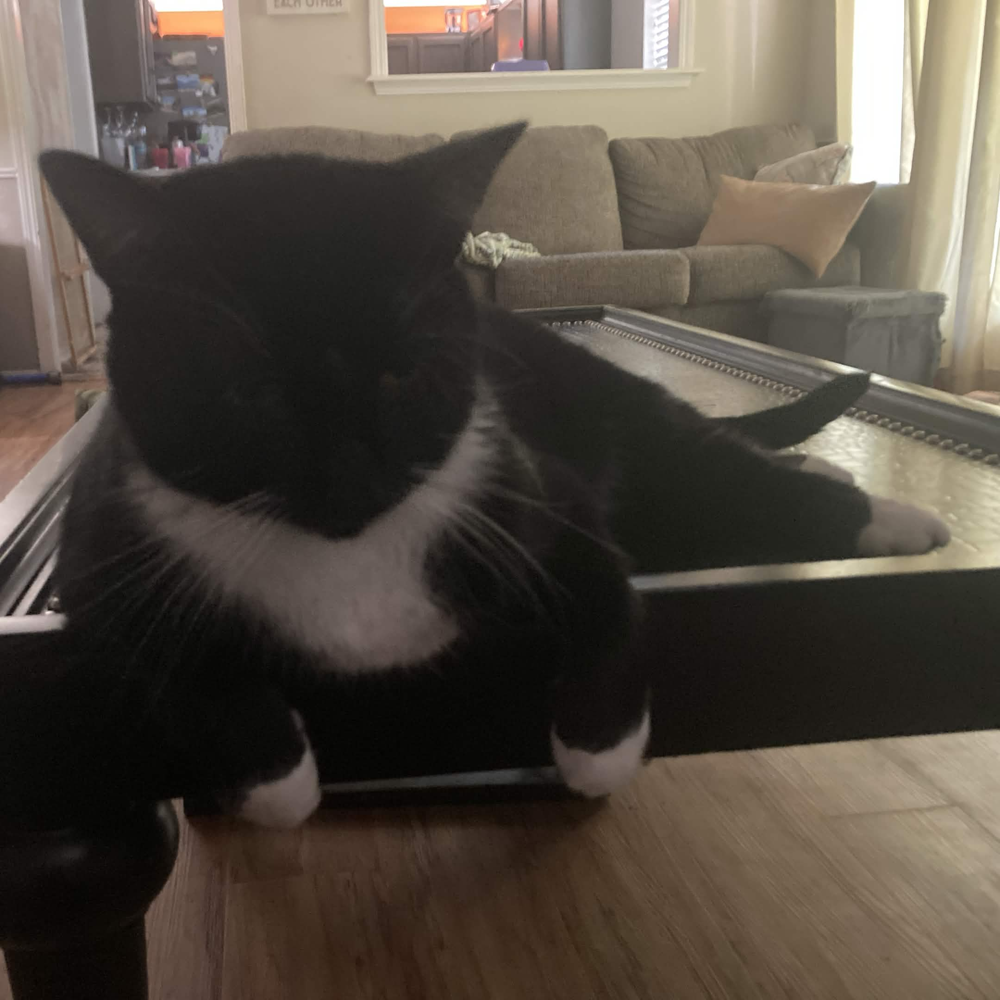
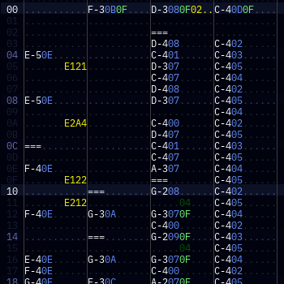

My name is Brady Johnson.
I am a graduating senior here at Carl Albert High School.
Over the past four years, I've experienced a lot in and out of academics. Even if I'm excited to get out of here, I can't say I haven't learned a lot of important lessons from all the experiences I've made it through.
Freshman Year
My memory of my freshman year is rather vague. Regardles of whether I remember what classes I had, I know there's a lot I learned that I've constantly applied to my life since.
Core Classes
- Oklahoma History
-
I've never found much interest in history, so I don't remember much from this class... But for the tidbits I do recall, it's nice to know our state has as much a rich history as any other state!
- Physical Science
-
This class helped me adjust to the more comedically formal teachers. Copeland was as professional at his job as he needed to be to sufficiently teach his students, but he was almost charming, in a way, with how he interacted with kids personally.
- English I
-
Having Mrs. Beasley, I was pretty ought to enjoy this class. Regardless of the teacher, though, I learned a few quirks about English that I don't believe I would have ever thought to learn myself. Maybe this was the class that got me as interested in English as I am!
- Freshman Orientation
-
This class helped me adjust all-round. Arguably, this was the class I was most social in. That's not to say I remember anything from this class—the most I recall is accidentally blaring audio from my computer while trying to play Mario Kart Wii.
- Algebra I
-
This is the class that most effectively taught me patience with teachers. Algebra was my strong suit at first, but the harshness of my teacher wore me down flat.
Electives
- Computer Applications I/II
-
It was pretty fun to learn the buttons and keys of different document programs. I had a kit who sat next to me and asked me for help all the time.
- Street Law
-
I'll be pooped if I remember a thing from this class. I remember I had Coach Mac, so it must have been relatively fun, I imagine.
- Reading for Pleasure
-
I think this class did a good job at teaching me to enjoy reading books (even if I spent the first half reading Ripley's books). If I had to point at a class responsible for my writing a book-in-progress, it'd be this one.
- Speech I
-
I mostly lounged around in this class. There's not a lot I got to injest, but from watching others, I took mental notes on how to stand up and speak to an audience with confidence.
Miscellaneous
This was a fun year for me. Getting into high school was a big jump in my confidence, and I was beginning to get into a bunch of fun hobbies.
I think the biggest interest I had begun was music; I fooled around in an online DAW to make whatever interesting stuff I could manage. In the few interactions I got, I got a lot of positive feedback!

Sophomore Year
With my freshman year behind me, I had a good gist of how to handle my next few school years. My confidence wasn't that much better than last year, but I would think I managed a bit better in general.
Yet, somehow, I remember this year a lot less than I remember my freshman year!
Core Classes
- Biology I
-
I don't recall a lot from this class. Maybe a few important tidbits here and there if you asked me, but I can't name a single thing off the top of my head except who my teacher was.
- English II
-
A lot like Biology, I don't remember a lot. In fact, I can't recall anything about my sophomore English class at the time of writing this.
- Geometry
-
I hadn't learned any life lessons from this class, but I did memorize important angle maths that I still use today—a triangle's and square's angles add up to 180° and 360° respectively, SOH CAH TOA, etc.
- World History
-
I believe this was the first core class I had with Coach Mac. I remember I hated it and blamed it on his being mean. I know now that I didn't hate him, I just hated the subject. I carry that lesson still. Was it "don't hate the player, hate the game"?
Electives
- Creative Writing
-
This was a lazy class for me; there wasn't a lot to do. The only thing that made it interesting was a bit of my own family drama that involved the teacher. 👀
- Digital Photography
-
The only real thing I learned in photography was rule of thirds. I think I maturely dropped it for another class eventually because I hated it so much. I won't say rule of thirds hasn't helped me with a lot of my own photography, though!
- Music Appreciation
-
I learned a lot about the history of music up to today, and I came to realize just how good some old forms of music were. I learned over everything that there's a lot more interesting stuff behind the culture that leads to a hobby than just the hobby itself.
- Webpage Design I/II
-
I don't think I learned anything in this class... The most I figured out is that I have to put images in the same folder as an HTML page for images to properly appear. (That sounds ironic, but bear with me for a bit.)
Miscellaneous
I believe this was the year I started getting into writing HTML pages—all the code and files—by hand. Turned out it's really fun!
I also spent a lot of time refining my music until I just couldn't get enough out of the DAW I was so used to. Eventually I gave up on it and spent some time learning how to use a chiptune tracker. They're basically glorified spreadsheets for music, but believe me when I tell you they're not all that hard once you get used to them.
Chiptune trackers let you make music that actually play on old-school consoles, including (but by no means limited to...!) the NES or Sega Genesis. It's not too distant from the actual software people used to compose for those consoles when they were popular!
Around this time I figured out how to use bass and percussion and I got a lot of compliments from even the professionals.

Junior Year
By now I best understood the cycle of a high school year. Socializing was a bit easier to focus on and classwork was maybe the easiest this year than any other year.
Core Classes
- Algebra II
-
Despite all my other classes being what felt like a breeze, I, by luck of the draw, got the same teacher I had from freshman year. ...And they were not any less mean. A bit of a refresher on patience, I suppose!
- Botany
-
Nothing happened in this class because the teacher stopped showing up earlier in the year. All we had was a sub a whole three quarters of the year. I'm not sure if she quit, if she was fired, if she had a long-term emergency...
- English II/III
-
I didn't particularly learn a lot of the intended material from this class because the teacher didn't do a lot to help. I think a lot of kids would agree that she barely kept her job that year thanks to her effort. (Can't say a lot about this year, though...) If I had to have learned anything, it's that your success isn't dependent on the people around you, it's dependent on you.
- US History
-
I had Coach Mac for this class again, I believe. This year, though, it was much easier as I grew acquainted with him. (Though, I found out later that year that he doesn't like me so much, quote him talking to my brother: "is Brady your brother? I feel bad for you!")
- Zoology
-
Looney was easy to work with this year; all his assignments were a breeze and, knowing to put in the effort, I managed to pass with relative ease. I think I learned from here that effort really is the solution to a lot of failures.
Electives
- Computer Programming I/II
-
This was a fun class to take! I learned a lot about important programming concepts I still use today; things like
ifstatements,whileloops...If I had any complaints, it's that this is a terrible class to get into programming in general. Java is not a beginner language. All the syntax is incredibly confusing. This is all the code it takes just to print "hello world" in the console:
public class HelloWorld { public static void main(String[] args) { System.out.println("Hello world!"); } }If anyone could forward a recommendation, it's that they teach programming using JavaScript, in which a "hello world" program would only look like this:
console.log("Hello world!"); - Mythology
-
Having Beasley for this class, I enjoyed it a lot! I don't recall a lot of what I was meant to learn, but I had a lot of fun! I remember some interesting note taking methods that I still use today.
- Psychology
-
This class was interesting in that it taught me how to recognize and handle different psychological issues. The biggest thing I've learned is positive and negative association, which I take advantage of today to mend my bond with things I hate and break away from things I don't want in my life.
Miscellaneous
I made a big (though temporary) leap in my social spot with an in-person friend group this year! I got to hang out at Braum's for lunch every day with a couple of buddies I shared interests with. It didn't last too long, though; it was mostly made up of seniors that had graduated by the end of the year.
I had also spent a lot of time learning programming on my own, creating a lot of coding projects that boosted my ability to achieve things I wanted to automate without relying on graphics-based programs.
However, I'd also made a big leap in my musical skill, I would think! I had caught onto a bunch of sweet skills that made my music sound much more snazzy. Not only that, but I had experimented with other subgenres and made some works that were praised by even the gods at this genre.
Senior Year
This year was arguably the hardest. Burnout among all my hobbies and the amount of schoolwork at once was beginning to kill me. I think I managed as well as I could, though, and I think I can say, all-round, this year built me the most.
Thankfully I was more in-control of my classes this year, as I had enough credits to substitute would-be core classes for electives.
Core Classes
- English IV
-
Once again, with Beasley, I enjoyed this class a lot. It taught me that individuality is the most important thing a person should strive for, especially as a teenager.
I wish I could say that I've learned Carpe Diem—"focus on the present without a care for your future"—but I'm pretty firm on that my future is all I have, and that anything I do in the present is inevitably going to affect my future.
- Environmental Science
-
Looney, once again, made it a bit of a breeze to pass this class. I did, however, learn some important details about endangered animals, factory farms, and who I'm affecting by purchasing from fast food or seafood restauraunts.
Electives
- Drawing
-
This class was not fun. It tried turning something I enjoy doing occasionally as a hobby into a chore. I did learn a few sweet tricks for coloring with colored pencils, though. Perhaps this class taught me about the art of patience.
- FACS
-
I learned a lot about cooking dishes and sewing small garments in this class. I think this period taught me to better appreciate the aroma of my own product coming out of an oven.
- Fashion Design I/II
-
I got a much better grasp of coloring and fabrics over the span of this class. I don't know how much it's improved my actual fashion, but my sewing and crafts have taught me as much as I would need to know to make my own garments at home!
- History Through Films
-
Not only was this a fun class to be in, but I still remember a lot about the movies I had watched for a grade. I liked them all, and I think this was my best class. I would think it boosted my attention span and helped me learn to appreciate movies with slower pacing.
Miscellaneous
I didn't take a lot of time to indulge in my hobbies over this past year. I had to put a lot of focus on keeping up with assignments and my grades, and because I didn't put in time to improve my skills, they've noticeably degraded over time.
That's partly excepting my coding the past year—I spent a lot of time practicing good programming conventions and solving common problems.
That doesn't mean I haven't picked up a few little tidbits listening to music, though! I spent as much time as I could working on and trying to improve my ability to work with chiptune trackers by talking to the professionals and just doodling when I felt like it.
Over the last 4 years, I've developed a lot and made a lot of positive changes to my life. There's a lot I wish I could go back and change, a lot I'm proud of and hold onto with pride, and certainly a ton I'll remember to become my best self as I move into life after high school.